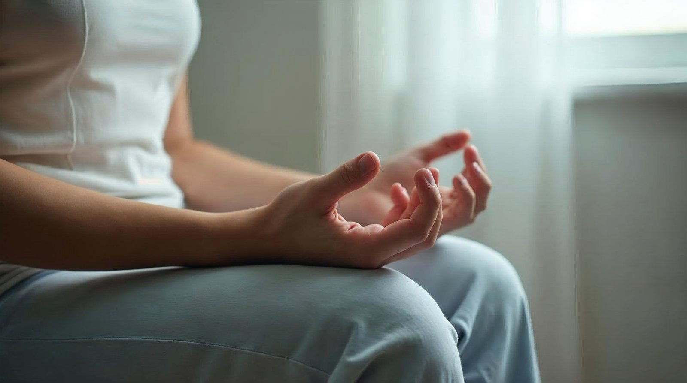

이종호 한의사 감수좋은꿈참사랑한의원 대표원장 (한의사 면허번호 19769)발행 2026-11-23 · 수정 2026-11-27
이 글의 차례
- 마음의 불안과 몸의 긴장, 이렇게 나눠 보세요
- 왜 이런 불편이 생길 수 있나요
- 왜 숨이 얕아지면 더 불안해질까요?
- 카페인과 술은 긴장과 어떻게 이어지나요?
- 긴장과 잠은 서로 어떻게 영향을 주나요?
- 긴장이 몸의 어디로 가는지는 사람마다 다를까요?
- 먼저 이렇게 여쭙니다
- 예를 들면 이런 상황입니다
- 스스로 점검해 보세요
- 일상에서 먼저 해 볼 수 있는 것
- 한의원에서 함께 살필 수 있는 경우
- 첫 방문은 이렇게 진행됩니다
- 침과 한약은 어떤 때 이야기하나요?
- 다시 오시면 무엇을 여쭙나요?
- 얼마나 지켜보고 언제 상담할까요
- 이렇게 기록해 오시면 상담이 쉬워집니다
- 이런 증상은 먼저 확인이 필요합니다
"요즘 불안해요"라고 말할 때 생각이 멈추지 않는 것인지, 몸이 굳어 있는 것인지 나눠 보면 이야기가 구체적이 됩니다. 마음의 불안과 몸의 긴장은 함께 오기도 하지만, 따로 말씀해 주시면 생활에서 먼저 손볼 부분을 찾기 쉬워집니다.
퇴근길 지하철에서 문득 어깨가 귀 쪽까지 올라가 있는 걸 알아차리는 날이 있습니다. 새벽에 눈을 떴는데 머릿속이 벌써 내일 일로 바쁜 날도 있지요.
진료실에서 불안을 이야기하시는 분께 저는 머릿속이 시끄러운 쪽인지, 몸이 딱딱한 쪽인지 여쭙곤 합니다. 잠시 생각하다가 둘 다인데 어느 쪽이 먼저인 것 같다고 순서를 짚어 주시는 분이 많고, 그 순서가 출발점이 됩니다.
마음의 불안과 몸의 긴장, 이렇게 나눠 보세요
- 마음의 불안: 걱정이 꼬리를 물고, 아직 일어나지 않은 일을 자꾸 떠올립니다. 한 가지 생각에서 빠져나오기 어렵고, 일에 집중하기 힘들다고 말씀하시는 분이 많습니다.
- 몸의 긴장: 어깨가 귀 쪽으로 올라가 있고, 턱에 힘이 들어가 이를 꽉 물고 있으며, 배가 단단하게 굳어 있습니다. 걱정은 별로 없는데 몸이 늘 준비 자세라고 하시기도 합니다.
- 마음 쪽은 조용한 밤이나 혼자 있을 때, 몸 쪽은 일에 몰두하거나 컴퓨터 앞에 오래 앉아 있을 때 더 두드러지는 경우가 많습니다.
말로 옮기면 마음 쪽은 "생각이 멈추지 않아요", 몸 쪽은 "온몸에 힘이 들어가 있어요"에 가깝습니다. 어느 문장이 지금의 나와 더 비슷한지 떠올려 보세요.
둘 중 하나만 있는 분도 있고, 둘이 서로를 키우며 함께 오는 분도 있습니다. 어느 쪽이 먼저 시작되는지, 하루 중 어느 쪽이 더 큰지만 알려 주셔도 충분합니다.
불안을 이야기하는 것 자체가 쉽지 않은 분도 많습니다. 말이 잘 나오지 않으면 적어 오신 메모를 그대로 보여 주셔도 되고, 오늘은 몸 이야기만 하고 싶다고 하셔도 괜찮습니다. 편하게 말씀하실 수 있는 만큼부터 시작하겠습니다.
왜 이런 불편이 생길 수 있나요
- 걱정이 이어지면 몸이 늘 대비하는 상태가 되어 어깨, 턱, 배에 힘이 들어가는 경우가 있습니다.
- 반대로 오래 굳은 몸이 피로와 답답함을 키워 마음이 더 예민해지기도 합니다.
- 잠이 부족하거나 카페인을 많이 마신 날 불안을 더 크게 느끼는 분이 있습니다.
- 한의학에서는 마음의 긴장이 소화, 잠, 호흡으로 이어지는 흐름도 함께 살핍니다.
조금 더 풀어 보면, 우리 몸은 위협을 느끼면 심장을 빨리 뛰게 하고 근육에 힘을 주어 바로 움직일 준비를 합니다. 짧게 지나가면 자연스러운 반응이지만, 걱정이 몇 주씩 이어지면 이 준비 상태가 잘 풀리지 않고 몸에 남기 쉽습니다.
반대 방향도 있습니다. 하루 종일 구부정하게 앉아 어깨와 목이 굳으면 숨이 얕아지고, 얕은 숨은 몸에 "뭔가 긴장할 일이 있다"는 신호를 보내 마음까지 조급하게 만들기도 합니다. 그래서 마음이 시끄러운 날에도 몸의 긴장을 먼저 알아차리는 일이 실마리가 되곤 합니다.
왜 숨이 얕아지면 더 불안해질까요?
긴장하면 숨이 가슴 위쪽에서 짧고 빠르게 쉬어집니다. 이런 숨이 이어지면 가슴이 답답하고, 숨을 충분히 못 쉬는 것 같은 느낌이 들어 다시 불안이 커지는 고리가 생기기 쉽습니다.
이 고리를 끊어 보려면 들이쉬는 숨보다 내쉬는 숨을 길게 하는 연습부터 해 볼 수 있습니다. 넷을 세며 들이쉬고 여섯을 세며 내쉬는 것을 몇 번 해 보세요. 어지럽거나 더 답답해진다면 무리하지 말고 평소 숨으로 돌아오시면 됩니다.
카페인과 술은 긴장과 어떻게 이어지나요?
커피, 에너지 음료, 진한 녹차처럼 카페인이 든 음료는 몸을 깨우는 대신 심장을 조금 빨리 뛰게 하고 근육을 긴장시키기도 합니다. 평소에는 괜찮다가도 잠이 부족하거나 걱정이 많은 시기에는 같은 한 잔이 불안을 더 키운다고 느끼는 분이 많습니다.
술은 처음에는 긴장을 풀어 주는 것 같지만, 잠든 뒤 몇 시간 지나 깨게 만들고 다음 날 마음을 더 예민하게 만드는 경우가 있습니다. 긴장을 풀려고 마시는 날이 늘었다면 그 횟수도 함께 적어 주세요.
한 번에 끊기보다 오후 2시 이후 카페인을 줄이고, 술은 마시는 날을 정해 두는 것부터 해 보세요. 줄인 날과 그렇지 않은 날의 밤잠과 다음 날 점수를 비교해 보면 내 몸이 얼마나 영향을 받는지 알 수 있습니다.
긴장과 잠은 서로 어떻게 영향을 주나요?
마음이 불안한 날에는 잠드는 데 오래 걸리고, 몸이 긴장한 날에는 자다가 자주 깨거나 아침에 개운하지 않다는 분이 많습니다. 잠이 부족하면 다음 날 같은 일에도 더 쉽게 긴장하게 되어 고리가 이어지기 쉽습니다.
그래서 저는 불안을 이야기하시는 분께 잠의 모양을 꼭 함께 여쭙니다. 잠드는 데 걸린 시간, 깬 횟수, 깼을 때 무엇이 떠올랐는지를 적어 오시면 마음 쪽과 몸 쪽 가운데 어디부터 손볼지 정하는 데 큰 도움이 됩니다.
잠자리에 들기 한 시간 전부터는 휴대폰과 업무 메시지를 멀리하고, 조명을 낮춰 몸이 쉴 준비를 하게 해 주세요. 누워서 잠이 오지 않으면 잠깐 일어나 조용한 곳에서 숨을 고른 뒤 다시 눕는 것도 방법입니다.
긴장이 몸의 어디로 가는지는 사람마다 다를까요?
네, 많이 다릅니다. 어떤 분은 긴장하면 어깨와 목이 먼저 굳고, 어떤 분은 턱에 힘이 들어가 이를 꽉 뭅니다. 배가 조이고 화장실을 자주 찾는 분, 가슴이 답답하고 한숨이 잦아지는 분, 손발이 차가워지는 분도 있습니다.
내 긴장이 주로 어디로 가는지 알아 두면 미리 알아차리기가 쉬워집니다. 예를 들어 턱으로 가는 분은 운전 중이나 컴퓨터 앞에서 턱의 힘을 빼는 습관을, 배로 가는 분은 중요한 일 전에 식사를 가볍게 하는 습관을 먼저 들여 보시면 좋습니다.
종이에 사람 모양을 간단히 그려 굳는 자리를 표시해 오셔도 좋습니다. 하루 중 굳는 자리가 바뀐다면 시간대별로 나눠 적어 주세요.
먼저 이렇게 여쭙니다
- 걱정이 계속 떠오르나요, 아니면 몸 어딘가가 늘 굳어 있나요?
- 몸이라면 어깨, 턱, 목, 배 중 어디가 먼저 굳나요?
- 하루 중 언제, 어떤 상황에서 심해지나요?
- 카페인이나 술을 드시는 양은 어떤가요?
- 잠과 식사는 어떻게 달라졌나요?
예를 들면 이런 상황입니다
- 예를 들어 다음 날 발표를 앞둔 밤, 누우면 해야 할 말과 실수할 장면이 계속 떠올라 잠들지 못하는 경우는 마음 쪽이 먼저인 모습입니다. 어떤 생각이 반복되는지 한 줄로 적어 두시면 됩니다.
- 예를 들어 마감이 몰린 주에 특별히 걱정은 없는데 아침에 일어나면 턱이 뻐근하고 어깨가 돌처럼 굳어 있는 경우는 몸 쪽이 먼저인 모습입니다. 굳는 자리와 그 주에 앉아 있던 시간을 적어 주세요.
- 예를 들어 사람 많은 곳에 가면 배가 꽉 조이고 화장실을 자주 찾게 되는 경우는 마음의 긴장이 배로 이어지는 모습일 수 있습니다. 어떤 장소에서 그런지 함께 적어 두시면 흐름이 보입니다.
스스로 점검해 보세요
- 같은 걱정이 하루에도 여러 번 되풀이된다.
- 일어나지 않은 일을 미리 떠올리며 마음이 조급해진다.
- 아침에 턱이 뻐근하거나 이를 갈았다는 말을 들었다.
- 어깨가 귀 쪽으로 올라가 있는 것을 자주 발견한다.
- 긴장하면 배가 단단해지거나 속이 불편해진다.
- 숨을 크게 쉬어도 시원하지 않은 느낌이 든다.
- 잠드는 데 30분 넘게 걸리는 날이 잦다.
첫째·둘째는 마음 쪽, 셋째부터 다섯째까지는 몸 쪽 단서입니다. 여섯째·일곱째는 둘 모두와 이어지는 경우가 많아, 해당한다면 함께 말씀해 주세요.

일상에서 먼저 해 볼 수 있는 것
- 하루 몇 번, 숨을 길게 내쉬며 어깨를 내려 보기
- 턱에 힘이 들어가면 입술은 다물고 윗니와 아랫니는 살짝 떼어 보기
- 걱정은 낮에 시간을 정해 종이에 적고 밤에는 내려놓기
- 오후 늦은 카페인 줄이기
- 하루 20분 정도 바깥에서 걷기
예를 들어 회의 전마다 어깨가 올라가고 속이 답답하다면 회의 10분 전에 숨을 길게 세 번 내쉬고 어깨를 내리는 것을 해 보고, 그날의 긴장 점수를 평소와 비교해 적어 보세요.
마음 쪽이 크다면 걱정을 적는 시간을 하루 한 번, 15분쯤으로 정해 보세요. 그 시간에 떠오르는 걱정을 모두 적고, 그중 오늘 할 수 있는 일 하나만 골라 둡니다. 밤에 걱정이 떠오르면 "낮에 적을 시간이 있다"고 스스로에게 말해 주고 다시 숨으로 돌아와 보세요.
몸 쪽이 크다면 한 시간에 한 번 자리에서 일어나 어깨를 크게 세 번 돌리고, 목을 천천히 좌우로 기울여 보세요. 컴퓨터 화면 옆에 작은 메모를 붙여 두고 볼 때마다 턱과 어깨의 힘을 빼는 습관을 들이는 것도 방법입니다.
걷기는 마음과 몸 양쪽을 함께 돌보는 방법이 될 수 있습니다. 걸을 때는 휴대폰을 주머니에 넣고 발바닥이 땅에 닿는 느낌, 바람과 소리에 잠깐 마음을 두어 보세요. 생각이 다시 걱정으로 돌아가도 괜찮으니, 알아차릴 때마다 발걸음으로 돌아오면 됩니다.
한의원에서 함께 살필 수 있는 경우
- 마음이 불안해지면 어깨와 목이 먼저 굳는 경우 몸의 긴장과 호흡의 깊이를 함께 살핍니다.
- 긴장하는 날마다 속이 불편하고 입맛이 없는 경우 소화와 식사 리듬을 함께 살핍니다.
- 걱정 때문에 잠드는 데 오래 걸리는 경우 잠의 모양과 저녁 생활을 함께 살핍니다.
좋은꿈참사랑한의원에서는 모든 분의 맥을 먼저 짚으며 마음과 몸의 긴장을 나눠 충분히 듣고, 필요하다고 판단될 때 설진을 더해 몸의 상태를 살핀 뒤, 상태에 맞춰 침이나 한약 상담 등을 정합니다. 다른 병원 진료를 받고 계시면 그 흐름을 존중하며 함께 이야기합니다.
첫 방문은 이렇게 진행됩니다
- 맥부터 짚기: 모든 분의 맥을 먼저 짚고, 짚는 동안에도 마음 쪽과 몸 쪽 가운데 어느 쪽이 먼저인지, 언제부터 이어졌는지 서두르지 않고 여쭙습니다. 필요하다고 판단될 때 혀와 배도 함께 봅니다.
- 몸의 긴장 살피기: 어깨와 목, 턱 주변 가운데 어디에 힘이 많이 들어가 있는지 함께 확인합니다.
- 생활 함께 보기: 잠, 식사, 카페인과 술, 하루의 움직임을 이어서 여쭙고, 적어 오신 점수가 있다면 나란히 놓고 봅니다.
- 방향 정하기: 상태에 맞춰 침이나 한약 상담을 정합니다. 한약은 지금 드시는 약을 먼저 확인한 뒤 이야기하고, 임신 중이시면 먼저 알려 주세요.
침과 한약은 어떤 때 이야기하나요?
생활 속 작은 습관을 먼저 바꿔 보는 것이 출발점입니다. 그래도 몸의 긴장이 쉽게 가라앉지 않거나, 긴장이 소화와 잠까지 흔들고 있다면 침이나 한약을 함께 상의합니다. 어느 쪽을 쓸지는 맥과 배의 상태, 기록에서 보이는 흐름을 보고 정합니다.
저는 잘 먹고, 잘 싸고, 잘 자고, 마음 편하고, 몸 따뜻하게, 이 다섯 가지를 몸이 회복하는 바탕으로 봅니다. 불안은 그중 '마음 편하고'에 걸린 일처럼 보여도 잠과 소화, 몸의 온기와 맞물려 있는 경우가 많습니다. 그래서 몸 쪽 긴장이 크면 어깨와 목, 등의 굳은 자리를, 마음 쪽이 크면 잠과 소화, 손발의 온기를 함께 봅니다.
다시 오시면 무엇을 여쭙나요?
두 번째 진료부터는 지난번 이후 마음과 몸의 점수가 어떻게 바뀌었는지, 함께 정한 숨 고르기나 걱정 적는 시간을 해 보셨는지부터 여쭙니다. 하기 어려웠다면 그 이유를 함께 이야기하고, 생활에 맞게 방법을 조금씩 바꿔 봅니다.
점수가 내려간 날이 있었다면 그날 무엇이 달랐는지도 함께 찾아봅니다. 잘 잔 날, 걷기를 한 날, 커피를 줄인 날처럼 나에게 맞는 조건을 하나씩 모아 가는 것이 이 과정의 큰 몫입니다.
얼마나 지켜보고 언제 상담할까요
- 숨 고르기, 걱정 적는 시간, 카페인 줄이기를 1~2주 해 보며 하루 두 번 마음과 몸의 점수를 적어 봅니다.
- 생활을 바꿔도 2주 넘게 점수가 그대로이거나, 긴장 때문에 잠과 식사, 일이 흔들린다면 상담을 받아 보세요.
- 불안이 갑자기 몰려와 숨이 막힐 듯한 일이 되풀이되거나, 기분이 가라앉은 시간이 길어진다면 미루지 말고 진료를 받아 보세요.
걱정이 꼬리를 무는 쪽이 크다면 걱정이 꼬리를 물고 멈추지 않는 범불안(불안장애)은 어떻게 살피나요?, 두근거림이 잦다면 가슴이 두근거리고 불안할 때는 어떤 점을 먼저 확인하나요?도 함께 읽어 보셔도 좋습니다.
이렇게 기록해 오시면 상담이 쉬워집니다
- 하루 두 번 마음과 몸 두 칸에 0~10으로 적은 긴장 정도
- 몸이 굳는 부위(예: 어깨, 턱)
- 긴장이 올라온 상황을 짧게 적은 것
- 복용 중인 약과 받고 있는 진료
기록 한 줄은 "월요일 오후 3시, 마음 6 몸 8, 어깨와 턱, 보고서 마감 앞두고"처럼 시각, 두 칸의 점수, 굳은 자리, 상황만 적으면 충분합니다. 일주일만 모아도 마음과 몸 가운데 어느 쪽이 먼저 올라가는지 보이는 경우가 많습니다.
점수를 매기기 어려운 날에는 "괜찮음, 조금, 많이" 세 단어 가운데 하나만 골라 적으셔도 됩니다. 빠진 날이 있어도 괜찮으니 부담 없이 이어 가 주세요.
복용 중인 약은 처방한 의사와 상의 없이 줄이거나 끊지 않습니다.
불안을 안고 하루를 버티는 일은 겉으로 잘 보이지 않아 혼자 더 지치기 쉽습니다. 그동안 애쓰셨습니다. 다음에 오시면 마음과 몸 가운데 어느 쪽이 먼저 올라왔는지, 그때 무엇을 하고 계셨는지부터 여쭙겠습니다.
이런 증상은 먼저 확인이 필요합니다
- 쥐어짜는 듯한 가슴 통증이나 갑자기 심해진 숨참(식은땀이 함께 나기도 합니다)
- 스스로를 해칠 생각이 들면 ☎ 109로 바로 연락하세요.
이런 신호가 있으면 한의원보다 가까운 병원이나 응급실을 먼저 찾으세요.

여쭙는 것
- 걱정이 계속 떠오르나요, 아니면 몸 어딘가가 늘 굳어 있나요?
- 몸이라면 어깨, 턱, 목, 배 중 어디가 먼저 굳나요?
- 하루 중 언제, 어떤 상황에서 심해지나요?
생활에서 해 볼 것
- 하루 몇 번, 숨을 길게 내쉬며 어깨를 내려 보기
- 턱에 힘이 들어가면 입술은 다물고 윗니와 아랫니는 살짝 떼어 보기
- 걱정은 낮에 시간을 정해 종이에 적고 밤에는 내려놓기
한의원에서 함께 살필 것
- 마음이 불안해지면 어깨와 목이 먼저 굳는 경우 몸의 긴장과 호흡의 깊이를 함께 살핍…
- 긴장하는 날마다 속이 불편하고 입맛이 없는 경우 소화와 식사 리듬을 함께 살핍니다.
- 걱정 때문에 잠드는 데 오래 걸리는 경우 잠의 모양과 저녁 생활을 함께 살핍니다.
먼저 확인이 필요한 신호
- 쥐어짜는 듯한 가슴 통증이나 갑자기 심해진 숨참(식은땀이 함께 나기도 합니다)
- 스스로를 해칠 생각이 들면 109로 바로 연락하세요.
한눈에 보는 표
| 구분 | 핵심 |
|---|---|
| 여쭙는 것 | 걱정이 계속 떠오르나요, 아니면 몸 어딘가가 늘 굳어 있나요? 몸이라면 어깨, 턱, 목, 배 중 어디가 먼저 굳나요? |
| 생활에서 해 볼 것 | 하루 몇 번, 숨을 길게 내쉬며 어깨를 내려 보기 턱에 힘이 들어가면 입술은 다물고 윗니와 아랫니는 살짝 떼어 보기 |
| 한의원에서 함께 살필 것 | 마음이 불안해지면 어깨와 목이 먼저 굳는 경우 몸의 긴장과 호흡의 깊이를 함께 살핍니다. 긴장하는 날마다 속이 불편하고 입맛이 없는 경우 소화와 식사 리듬을 함께 살핍니다. |
| 먼저 확인이 필요한 신호 | 쥐어짜는 듯한 가슴 통증이나 갑자기 심해진 숨참(식은땀이 함께 나기도 합니다) 스스로를 해칠 생각이 들면 109로 바로 연락하세요. |
자주 묻는 질문
불안할 때 몸에서 먼저 풀어 볼 수 있는 곳이 있나요?
저는 어깨와 턱을 먼저 권합니다. 숨을 내쉬면서 올라간 어깨를 툭 떨어뜨리고, 윗니와 아랫니 사이를 살짝 띄워 보세요. 하루 몇 번 이렇게 해 보시고 언제 다시 굳는지 적어 오시면 진료 때 함께 봅니다.
몸의 긴장만 있고 걱정은 없는 것 같아요.
그대로 말씀해 주시면 됩니다. 굳는 부위와 시간을 적어 오시면 도움이 됩니다.
가슴이 두근거리는 것도 불안 때문일까요?
그럴 수도 있지만 심장 쪽을 먼저 확인해야 하는 경우도 있습니다. 두근거림이 잦다면 내과에서 심장을 먼저 살펴보시고, 언제 어떤 상황에서 두근거리는지 적어 오시면 진료 때 함께 봅니다.
말로 설명하기가 어려우면 어떻게 하나요?
괜찮습니다. 적어 오신 점수나 메모를 보여 주시거나, 떠오르는 대로 천천히 말씀하셔도 됩니다. 진료실에서 질문을 드리며 함께 정리해 갑니다.
좋은꿈참사랑한의원은 재진 때 지난번 이야기부터 이어서 여쭙니다. 진료시간과 예약은 오시는 길에서 확인하세요.
어디서 상담받을 수 있나요?
좋은꿈참사랑한의원은 서울 동작구 만양로2길 2 신성빌딩 3층·5층(서울 동작구 상도동, 7호선 상도역 3번 출구 근처)에 있습니다. 한의사 3명(이종호 대표원장, 조영기 수석진료원장, 정원영 진료원장)이 진료합니다. 진료시간은 평일 09:30~20:00(점심 13:00~14:00), 토·일·공휴일 09:30~15:00이며, 방문 전 전화로 확인을 권합니다. 예약은 네이버 예약, 카카오톡 상담, 전화 02-815-7510로 받습니다.
이 글은 일반적인 건강 정보이며 개인의 진단이나 치료를 대신하지 않습니다. 증상이 있거나 복용 중인 약이 있다면 진료를 통해 확인하세요. 치료 효과는 개인마다 다를 수 있습니다.
작성 기준: 일반적으로 알려져 있는 건강 정보를 참고해 정리했습니다(대표원장 감수). 증상 기록은 1~2주 동안 하루 1회, 비슷한 시간에 적어 오시면 지난 상태와 비교하기 쉽습니다.